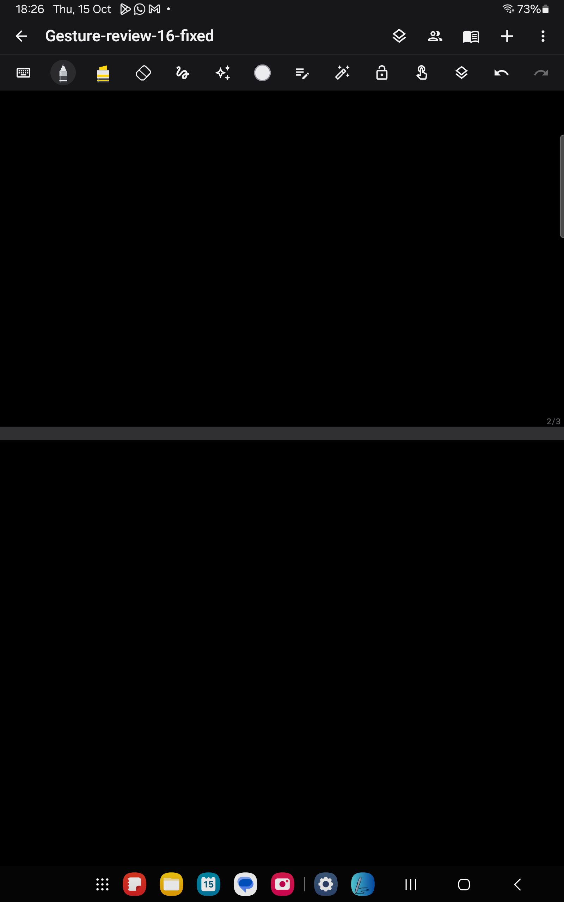
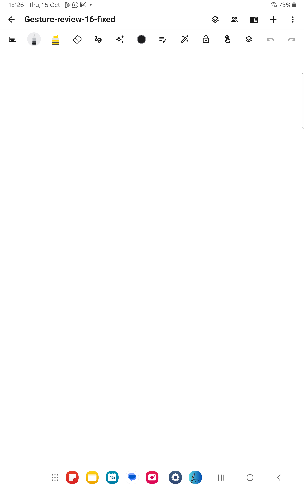
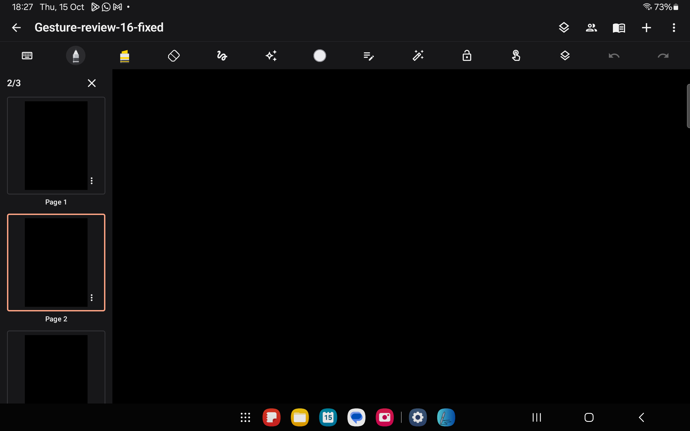

Latest update: 1.7 restores finger writing by default and adds a visible Write/Scroll mode label. The S Pen default described below applies only to 1.6.
Tested on the connected Samsung Galaxy Tab SM-T733 on 15 October 2026. Notes Preview 1.6 (22) is installed alongside the original app. Existing notes and collaboration settings were preserved.
A two-finger swipe with 12% spacing drift failed to append a page in 1.5, while a parallel swipe succeeded. The recognizer permanently treated any span change above 3% as a pinch. Finger writing also defaulted to enabled on S Pen tablets, so a normal one-finger scroll could write instead. The end-pull preview jumped by 72dp and scrolling stopped immediately on lift.
| Action in a new review note | Saved result |
|---|---|
| One-finger upward end pull | 2 pages, 0 ink strokes |
| Uneven two-finger upward swipe | 3 pages, 0 ink strokes |
| Three repeated pinch-outs | Still 3 pages, 0 ink strokes |
| Save, reopen, system theme switch and landscape page sorter | 3 pages preserved; dark/light paper and controls follow the device setting |
Samsung Notes was also opened with a temporary blank note for comparison. Its original 89 notes remained unchanged; the empty comparison note was not retained. The tablet's original night mode and automatic rotation were restored.



82 tests passed: 26 JVM and 56 Android tests, including the three local TLS/WebSocket collaboration tests. New regressions cover uneven finger spacing, pinch after scrolling, continued navigation after one finger lifts, momentum, touch-to-stop, and cancelling an end pull. Lint completed with 0 errors and 77 warnings. Logs: build-ui-gesture-16-final.log, build-ui-gesture-all-tests.log, build-ui-gesture-physical.log and build-ui-gesture-physical-final.log.
Installed Preview APK: C:\Users\vardh\AndroidStudioProjects\Notepad\app\build\outputs\apk\device-preview\notes-preview.apk
SHA256: 40E1BF4840B3ACDADE7B9CF4E82B58D1CFBC10DA233F1A28C849322F1330D089
Standard package APK: C:\Users\vardh\AndroidStudioProjects\Notepad\app\build\outputs\apk\debug\app-debug.apk
SHA256: 0DA59EB47A305658135BD6AC4959EE605815AF65FDD1CC10682B3A7BF822DEA3
The original tablet app uses a different signing certificate, so these fixes are installed as Notes Preview with separate storage. Opening the original 1.0 app will still show its previous behaviour. The original app was not uninstalled or cleared.
These checks establish gesture correctness and momentum behaviour; sustained frame pacing and physical S Pen latency were not benchmarked. Collaboration keeps the existing protocol and ink-only scope. See the 1.5 device/theme review for the earlier implementation details.